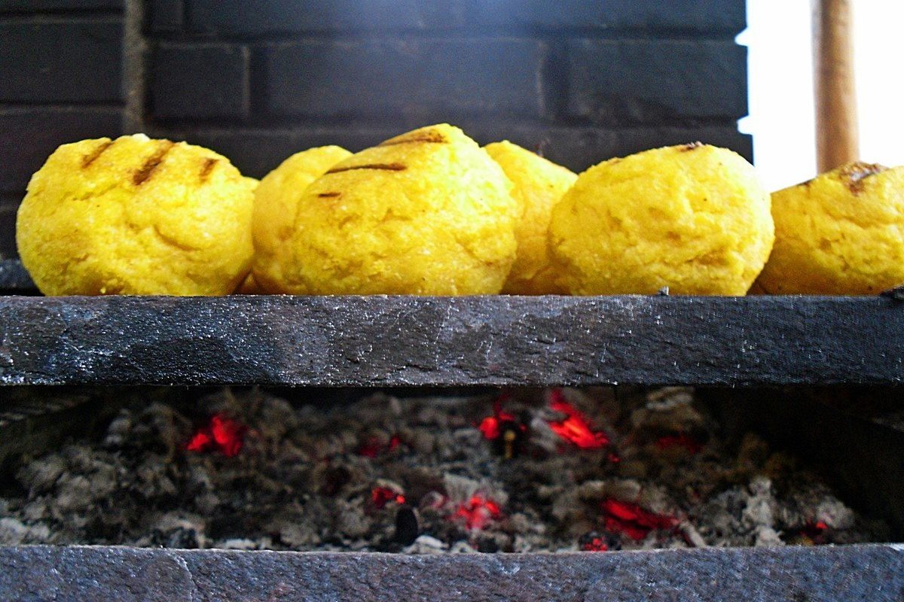
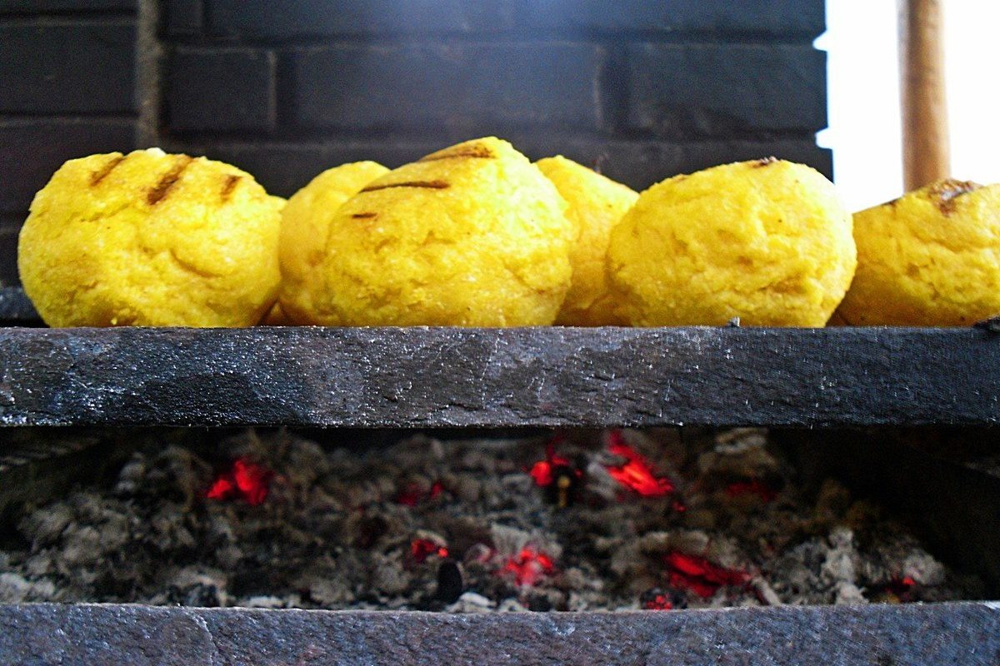

Malay Roti – Lipii fine si moi cu Unt | Bucatarie Indiana Vegetariana
2021.03.24 11:28
Bucatarie Indiana Vegetariana
Delicii culinare ayurvediceSearch
Home Subscribe Home BASICS INGREDIENTE INDEX RETETE Retete pentru VATA Retete pentru PITTA Retete pentru KAPHA Retete TRIDOSHICE MENIURI Remedii Ayurvedice MICI SFATURI AYURVEDICE AYURVEDA ESSENTIALS Festivaluri indiene Mic dictionar ASTROLOGIE Despre mine Faina de Grau , Lapte , UntMalay Roti Lipii fine si moi cu Unt
Posted by cloudpearl ⋅ 29 December 2015
Am incercat de curand un nou tip de lipii fara drojdie si au iesit atat de grozave, de fine si placute, incat merita sa va impartasesc si voua reteta. Este un tip de Roti (lipie) pe care am invatat-o de la o persoana din Sri Lanka, insa reteta provine din Malaezia.
Reteta e simpla, seamana cu Parathas -urile indiene simple, cu unele mici diferente. Partea cea mai inedita e ca la ingrediente se foloseste unt in loc de ulei, ceea ce da o delicatete speciala acestor painite. Evident, daca nu agreati untul, puteti folosi margarina, desi aceasta e complet nesanatoasa (in ciuda reclamelor care inunda presa si tv-ul).
Cei care de obicei se plang ca nu le ies cum trebuie lipiile indiene, ca ies prea uscate, nu vor mai avea motiv de insatisfactie. Malay Rotis vor fi garantat fine, moi si raman astfel chiar si dupa ce se racesc de tot. Deci sunt niste painite ce pot fi facute azi si luate maine la servici, la drum sau la picnic.
Asadar iata mai jos reteta cu care veti avea succes garantat in prepararea lipiilor!
timp de preparare: aprox 40 min + 30 min in care nu faceti nimic
rezulta 10 Rotis
INGREDIENTE
1 + 1/2 cani faina de grau integrala
1 cana faina de grau alba
100 gr unt moale, la temperatura camerei
3-4 linguri lapte rece
1 lingurita sare
aprox 150 ml apa
1 cana = 350 ml
METODA
Faceti un aluat fin si moale din fainuri + sare + lapte + 2 linguri unt moale (nu topit !) + apa. Turnati apa cate putin, nu toata deodata. Cantitatea de apa folosita depinde mult de tipul de faina pe care il aveti.
Framantati cam 5 minute, apoi ugeti aluatul cu putin unt si acoperiti-l. Lasati-l sa stea minim 30 minute pana-n 2 ore, la temperatura camerei.
Luati aluatul la framantat cateva secunde, apoi impartiti-l in 10 bile egale. Turnati o picatura de ulei pe suprafata de lucru si intindeti una din bilele de aluat ca pe un Chapati . (Acoperiti bilele ramase ca sa nu se usuce aluatul intre timp.)
Ungeti toata suprafata discului de aluat cu unt, cu ajutorul unui cutit cu varful rotund. Atentie sa nu rupeti aluatul pentru ca este foarte fin. Fiti generosi cu untul, dar asta nu inseamna ca trebuie sa ungeti aluatul ca si cum ati pune unt pe paine.
Pliati apoi discul in patru, ca si cum ati face un plic. Puneti deoparte plicul astfel format si procedati la fel cu celelalte bile de aluat.
Puneti o tigaie (preferabil de fonta sau una cu fundul gros/dublu) pe foc mediu.
Luati primul plic de aluat format si intindeti-l usurel (tot pe o suprafata unsa cu un strop de ulei) dandu-i o forma patrata, pe cat posibil. De ce patrata? Asa e modelul original, traditional. Insa evident ca puteti sa-i dati ce forma vreti.
Patratul de aluat trebuie sa fie de grosimea unui Chapati , deci nu excesiv de subtire.
Puneti in tigaia incalzita in prealabil si coaceti ca pe un Chapati obisnuit. Cand observati ca incepe sa isi schimbe culoarea in bejuliu inchis si sa apara umflaturi, intoarceti si coaceti inca 40 sec sau cat e necesar, in functie de grosimea tigaii si intensitatea focului. Daca mai observati zone necoapte suficient, mai intoarceti pana ce sunteti multumiti de rezultat. Insa nu tineti excesiv de mult Roti-ul in tigaie pentru ca va fi prea uscat.
Imediat dupa ce ati pus un Roti in tigaie sa se coaca, intindeti altul, ca sa fie pregatit cand terminati primul Roti de copt.
La mama lui acasa, acest Roti se pregateste adaugand putin unt in timpul gatirii in tigaie, de jur imprejurul sau, inainte sa fie complet copt. Insa eu am optat sa nu folosesc, ca si-asa reteta contine suficient de mult unt, iar Rotis sunt delicios de fine chiar si dupa ce se racesc.
Nu uitati sa pastrati Rotis-urile care v-au mai ramas, dupa ce ati mancat, intr-un vas inchis etans, ca sa se mentina moi si fine mai mult timp.
Din punct de vedere Ayurvedic: Malay Rotis sunt Tridoshice , insa persoanele Pitta si Kapha nu trebuie sa faca din ele tipul principal de paine pentru consum zilnic.
click aici pentru a va afla Tipologia Ayurvedica
ALTE PAGINI SUGERATE
IDLI
LUCHI
Paneer PARATHA Lipii cu branza Paneer
Green Chilli Onion Chapati
Share this:
Tweet Email PrintLike this:
Like Loading...Related
Cinnamon Roll Sugar Cookies Biscuiti invartiti cu Scortisoara IDIYAPPAM Pernite din Paste de OrezDiscussion
Comments are closed.
Urmareste Blogul prin Email
BUCATARIE INDIANA VEGETARIANA PE Facebook
BUCATARIE INDIANA VEGETARIANA PE FacebookCele mai noi Articole
Retete si sfaturi ayurveda “gratuite” Aloo MURUKKU Rotocoale din Cartofi si Faina de Orez Nuca de Cocos proaspata O noua metoda de despicare VIDEO Matar ka Salan Curry de Mazare verde in sos de Arahide IDIYAPPAM Pernite din Paste de OrezCATEGORII DE ARTICOLE
CE VA PLACE CEL MAI MULT
ARHIVA
ARHIVA Select Month November 2017 (1) May 2016 (1) March 2016 (1) February 2016 (2) December 2015 (4) November 2015 (1) October 2015 (1) September 2015 (4) August 2015 (3) July 2015 (7) June 2015 (3) March 2015 (3) February 2015 (5) January 2015 (7) December 2014 (9) November 2014 (3) October 2014 (3) September 2014 (4) August 2014 (4) July 2014 (5) June 2014 (5) May 2014 (6) April 2014 (7) March 2014 (10) February 2014 (9) January 2014 (4) December 2013 (4) November 2013 (6) October 2013 (5) September 2013 (9) August 2013 (27) July 2013 (26) June 2013 (20) May 2013 (10) April 2013 (16) March 2013 (13) February 2013 (14) January 2013 (11) December 2012 (13) November 2012 (11) October 2012 (15) September 2012 (15) August 2012 (14) July 2012 (19) June 2012 (14) May 2012 (12) April 2012 (10) March 2012 (46) February 2012 (2) January 2012 (7) December 2011 (10) November 2011 (1) September 2011 (1)Vizite pe Blog
3,035,279 viziteCALENDAR
December 2015 S M T W T F S 1 2 3 4 5 6 7 8 9 10 11 12 13 14 15 16 17 18 19 20 21 22 23 24 25 26 27 28 29 30 31 Nov FebBucatarie Indiana Vegetariana
Create a free website or blog at WordPress.com.
Loading Comments... Comment × %d bloggers like this:
- Perdele scurte Bucatarie - eMAG.ro
- Convertor unitati masura Bucatarie | Untdelemn de la Bunica
- Cu Medi in bucatarie
- Perdele | FAVI.ro
- Poze : pâine, bagheta, cină, alimente, carbohidrați, unt ...
- Cum se face GHEE | Bucatarie Indiana Vegetariana
- Crumble cu mere - retete de prajituri - Retete Practice
- Malay Roti – Lipii fine si moi cu Unt | Bucatarie Indiana ...
- Reţetă Fursecuri fragede cu unt - Arome în bucătărie
- Perdele bucătărie | FAVI.ro
- Perdele scurte Bucatarie - eMAG.ro
150 g unt la temperatura camerei. 100 g zahar pudra. 6 oua . 150 g ciocolata amaruie. 1 lingura cacao. 2 pliculețe zahar vanilat. 75 g zahar tos. 150 g faina. o priza sare. Mai avem nevoie. unt pentru uns tava
- Convertor unitati masura Bucatarie | Untdelemn de la Bunica
100 gr unt moale, la temperatura camerei 3-4 linguri lapte rece 1 lingurita sare aprox 150 ml apa. 1 cana = 350 ml. METODA Faceti un aluat fin si moale din fainuri + sare + lapte + 2 linguri unt moale (nu topit !) + apa. Turnati apa cate putin, nu toata deodata. Cantitatea de apa folosita depinde mult de tipul de faina pe care il aveti.
- Cu Medi in bucatarie
o lingură de unt; sare, piper; Mod de preparare dorada la cuptor cu sparanghel tras în unt. Peştele se curăţă de măruntaie (asta dacă nu aveţi noroc să luaţi peşte eviscerat) şi solzi, se spală şi se şterge uşor cu un prosop de hârtie. Se crestează peştii pe ambele părţi (4-5 tăieturi sunt suficiente).
- Perdele | FAVI.ro
Sare O linguriţă rasă = 10 g Făină O cană rasă = 250 g de făină Un pahar plin = 125 g O lingură = 15 g O lingură cu vârf = 25 g O. Citește mai multe.
- Poze : pâine, bagheta, cină, alimente, carbohidrați, unt ...
Perdea Velaria in unt lucios cu model baroc, 440x175 cm. 270,00 lei. Detaliu Spre magazin. 2. În stoc. Perdea Velaria ivoire cu turcoaz, 270x155 cm. 180,00 lei. ... Bucătărie și sufragerie Echipamente baie Living Dormitor Camera copiilor Hol și coridor Promoții Contactează-ne. locuintefrumoase@favi.ro ...
- Cum se face GHEE | Bucatarie Indiana Vegetariana
Știu că-ți place să gătești și să pui pe masă bucate făcute cu dragoste. Vrei ca totul să iasă ca la carte, iar eu vin în ajutorul tău cu un Convertor pentru unitățile de măsură în bucătărie. Acum poți calcula rapid câți mililitri are o linguriță de ulei sau câte grame sunt într-o cană de făină.
- Crumble cu mere - retete de prajituri - Retete Practice
Unt de arahide crocant "Rich Roast" 100%, fara aditivi, zahar, conservanti, 280g Meridian în stoc. Livrat de EcoNatural 21 26 Lei. 20 17 Lei. Adauga in Cos. 0 review-uri (0) Compara. Unt de caju, Obio, bio, fara gluten, fara sare, 250g ultimele 3 produse. 70 00 Lei (-31%) 48 00 Lei ...
- Malay Roti – Lipii fine si moi cu Unt | Bucatarie Indiana ...
Re: Cum facem unt de casa. da Laura, ar trebui sa iasa caci are grasime destula, dar iti va iesi un unt care va fi mai potrivit pentru mancaruri sarate decat la deserturi. din smantana dulce iese untul "dulce" cum ar veni, iar din creme fraiche (care e similara cu smantana acra) iese un unt "fermentat".
- Reţetă Fursecuri fragede cu unt - Arome în bucătărie
Această prăjitură cu brânză la tavă este făcută după rețeta bunicii mele. Noi îi spuneam „túrós pite”, (în limba maghiară) pite fiind o prăjitură simplă, la tavă, din ingrediente foarte simple: un aluat fraged cu unt sau untură și umplutură de brânză, fructe sau gem. În Ardeal prăjiturile cu aluat fraged sunt cunoscute ca „poronio” (poronyo sau porono). În ...
- Perdele bucătărie | FAVI.ro
Explorează selecția noastră de veselă, pahare, tacâmuri, accesorii de bucătărie și nu numai pentru a completa decorul meselor tale. Gama noastră include o varietate de stiluri, texturi, modele și materiale care să se potrivească stilului mesei tale — clasic sau de sezon.
150 g unt la temperatura camerei. 100 g zahar pudra. 6 oua . 150 g ciocolata amaruie. 1 lingura cacao. 2 pliculețe zahar vanilat. 75 g zahar tos. 150 g faina. o priza sare. Mai avem nevoie. unt pentru uns tava
100 gr unt moale, la temperatura camerei 3-4 linguri lapte rece 1 lingurita sare aprox 150 ml apa. 1 cana = 350 ml. METODA Faceti un aluat fin si moale din fainuri + sare + lapte + 2 linguri unt moale (nu topit !) + apa. Turnati apa cate putin, nu toata deodata. Cantitatea de apa folosita depinde mult de tipul de faina pe care il aveti.
o lingură de unt; sare, piper; Mod de preparare dorada la cuptor cu sparanghel tras în unt. Peştele se curăţă de măruntaie (asta dacă nu aveţi noroc să luaţi peşte eviscerat) şi solzi, se spală şi se şterge uşor cu un prosop de hârtie. Se crestează peştii pe ambele părţi (4-5 tăieturi sunt suficiente).
Sare O linguriţă rasă = 10 g Făină O cană rasă = 250 g de făină Un pahar plin = 125 g O lingură = 15 g O lingură cu vârf = 25 g O. Citește mai multe.
Perdea Velaria in unt lucios cu model baroc, 440x175 cm. 270,00 lei. Detaliu Spre magazin. 2. În stoc. Perdea Velaria ivoire cu turcoaz, 270x155 cm. 180,00 lei. ... Bucătărie și sufragerie Echipamente baie Living Dormitor Camera copiilor Hol și coridor Promoții Contactează-ne. locuintefrumoase@favi.ro ...
Știu că-ți place să gătești și să pui pe masă bucate făcute cu dragoste. Vrei ca totul să iasă ca la carte, iar eu vin în ajutorul tău cu un Convertor pentru unitățile de măsură în bucătărie. Acum poți calcula rapid câți mililitri are o linguriță de ulei sau câte grame sunt într-o cană de făină.
Unt de arahide crocant "Rich Roast" 100%, fara aditivi, zahar, conservanti, 280g Meridian în stoc. Livrat de EcoNatural 21 26 Lei. 20 17 Lei. Adauga in Cos. 0 review-uri (0) Compara. Unt de caju, Obio, bio, fara gluten, fara sare, 250g ultimele 3 produse. 70 00 Lei (-31%) 48 00 Lei ...
Re: Cum facem unt de casa. da Laura, ar trebui sa iasa caci are grasime destula, dar iti va iesi un unt care va fi mai potrivit pentru mancaruri sarate decat la deserturi. din smantana dulce iese untul "dulce" cum ar veni, iar din creme fraiche (care e similara cu smantana acra) iese un unt "fermentat".
Această prăjitură cu brânză la tavă este făcută după rețeta bunicii mele. Noi îi spuneam „túrós pite”, (în limba maghiară) pite fiind o prăjitură simplă, la tavă, din ingrediente foarte simple: un aluat fraged cu unt sau untură și umplutură de brânză, fructe sau gem. În Ardeal prăjiturile cu aluat fraged sunt cunoscute ca „poronio” (poronyo sau porono). În ...
Explorează selecția noastră de veselă, pahare, tacâmuri, accesorii de bucătărie și nu numai pentru a completa decorul meselor tale. Gama noastră include o varietate de stiluri, texturi, modele și materiale care să se potrivească stilului mesei tale — clasic sau de sezon.
 
